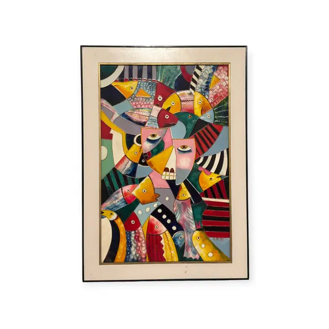
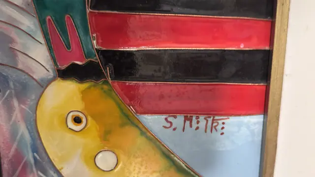
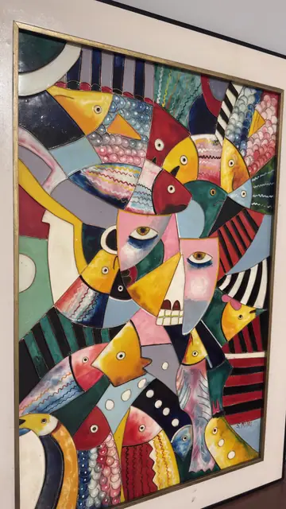
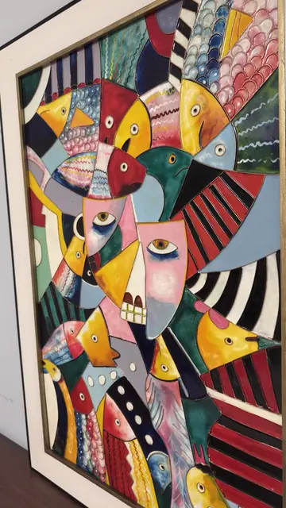
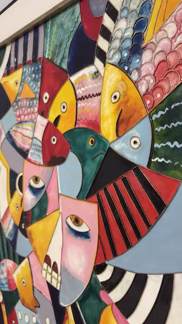
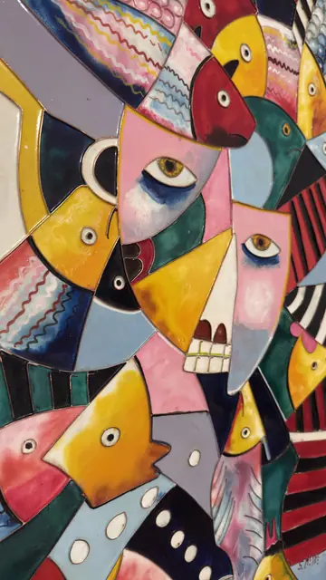

Paintings & Prints
Large Cubist Panel of Birds and Masked Faces, Signed, Framed
· late 20th to early 21st century
Price Upon Request






About the Item
A big, jubilant composition in which dozens of stylised birds, fish and mask-like human profiles interlock like puzzle pieces across the whole panel. Every shape is bounded by a raised black outline and filled with high-gloss enamel-bright colour - scarlet, cadmium yellow, cobalt, sea green, pink and cream - many of them patterned with stripes, scallops, wavy lines or rows of white dots. Two large frontal faces with wide staring eyes and bared teeth anchor the centre, surrounded by fan-shaped tails and beaked heads that read equally as feathers or fins. The surface is glassy and lacquer-like, with the pooled colour and ridged outlines giving a cloisonne or stained-glass effect. It is set in a plain broad off-white frame with a thin gold inner fillet, unglazed. Medium: lacquer or enamel-like paint on board with raised outlines. Signed lower right of the image, painted in dark red-brown block letters, reading "S. MiTk". Inscribed on the reverse or mount: S. MiTk (with three dots after the final letter). Condition: Glossy surface bright and unchipped in the shots available; strong specular highlights everywhere because of the high-gloss finish. Frame face is clean cream with light handling marks.
Details
- Creation Year:
- late 20th to early 21st century
- Dimensions:
- Height: 42.0 in (106.68 cm)
Width: 30.0 in (76.2 cm)
outside of frame - Medium:
- lacquer or enamel-like paint on board with raised outlines
- Period:
- 21St
- Condition:
- Offered in the condition shown in the photographs.
- Reference Number:
- VO-155
- Documentation:
- no certificate photographed
- Gallery Location:
- S. MiTk (with three dots after the final letter)